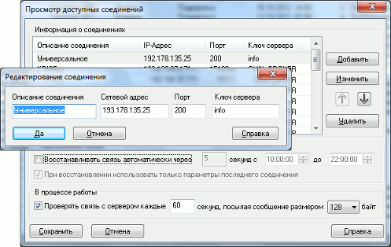

Настройка параметров соединения
-
- По умолчанию предлагается тип соединения, который был использован при предыдущем подключении. Если какое-то соединение было отредактировано или добавлено, то при очередном подключении оно будет предложено по умолчанию.
- Рекомендуется настроить очередность записей в списке соединений в порядке убывания частоты использования соединений, перемещая строки в списке кнопками со стрелками и .

- Откройте пункт меню Система / Соединения....
- Для редактирования выберите строку из списка «Информация
о соединениях» и нажмите кнопку «Изменить».
- Для создания нового соединения нажмите кнопку «Добавить».
- В поле «Сетевой адрес» укажите доступный сетевой адрес компьютера, на котором установлен сервер QUIK, в поле «Порт» – порт сервера. При работе через прокси-сервер в локальной сети его сетевой адрес и порт указываются в пункте меню программы Система / Настройки / Соединение с Интернетом... (см. Настройка соединения через прокси-сервер).
- В поле «Ключ сервера» укажите идентификатор ключа сервера. Идентификатор сообщается Администратором сервера QUIK.
- В поле «Сетевой адрес» указывается сетевое имя или IP-адрес компьютера, на котором установлен сервер QUIK.
- Нажмите кнопку «Да» для сохранения изменений или кнопку «Отмена» для
закрытия окна без сохранения.
- Для удаления ненужного соединения выделите его описание в списке
«Информация о соединениях» и нажмите кнопку «Удалить».
Настройки автоматического восстановления связи с сервером
- Установите флажок «Восстанавливать связь автоматически через ... секунд с ... до ...».
- в поле «через ... секунд» задайте период ожидания в секундах. Рекомендуемый
интервал: 15-60 секунд. Минимальный интервал: 5 секунд.
- В полях «с ... до...» укажите период времени, в течение которого будет действовать восстановление связи. Указывается системное время компьютера пользователя. Рекомендуется настраивать период в соответствии со временем проведения торгов на бирже, так как по завершении торгов сервер автоматически отключает всех пользователей. В последующие торговые дни связь будет автоматически восстанавливаться в назначенное время.
- Если флажок «При восстановлении использовать только параметры последнего
соединения» включен (по умолчанию), то следующее соединение устанавливается
с теми же настройками, что и в предыдущей попытке.
Если флажок снят, то следующее соединение устанавливается с настройками,
указанными в следующей строке списка «Информация о соединениях».
Для этого необходимо упорядочить список доступных соединений с помощью кнопок и в соответствии с желаемой очередностью перебора
соединений. Эта возможность может использоваться
для подключения к серверу через разных
провайдеров.
Настройки мониторинга задержек на канале связи
Если установлен флажок «Проверять связь с сервером каждые … секунд, посылая сообщение размером … байт», то программа проводит регулярный замер задержек на канале связи между сервером и клиентом, при этом значение по умолчанию (и минимальное значение) 30 секунд.
Результаты замеров отображаются в «Информационном окне», см. Мониторинг состояния соединения.
Функция имеет параметры для настройки:
- интервал в секундах между отправкой сообщений, рекомендуемая
величина: «60»;
- величина отправляемого пакета, в байтах, рекомендуемая величина:
«128».